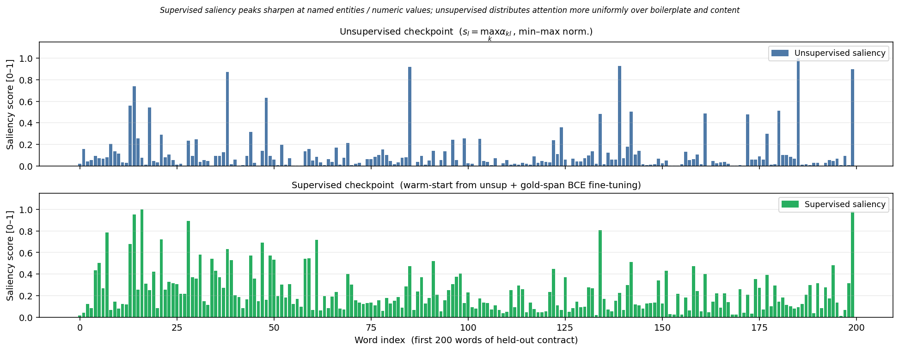
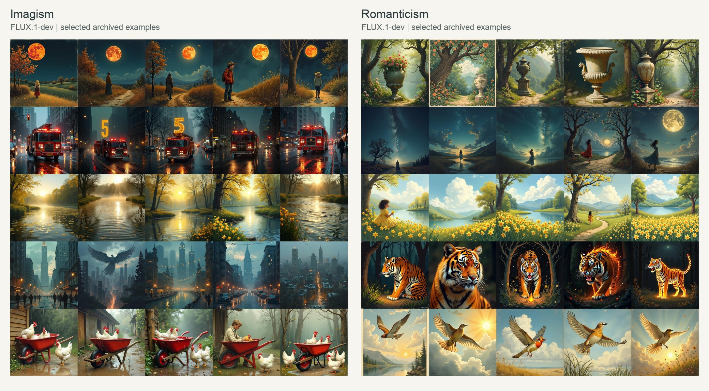
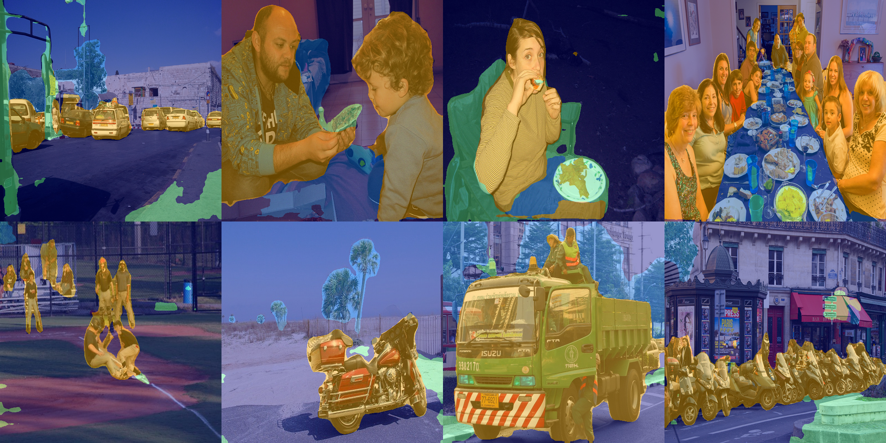

Projects
Course and summer projects where I built the data, models, evaluation, and visual outputs myself.
MemSlot: long-document retrieval and compression
MemSlot treats long-document question answering as a retrieval and compression problem before OCR. I built the neural retriever, document rendering, pruning baselines, and evaluation notebooks. End-to-end OCR-to-QA evaluation is still incomplete.


Poetry and image variation
This project asks whether Imagist and Romantic poems lead image models toward different kinds of visual variation. I generated images with FLUX and Stable Diffusion, then compared the saved variation scores in Python.


Text-KEN: comparing collections of text
Text-KEN compares collections of text without training a classifier. I built the sentence-embedding and statistical comparison pipeline.
Movability segmentation
This project groups objects by how they can move, then predicts those classes across a scene. I adapted a semantic-segmentation model and built the data remapping, preprocessing, training, and checkpoint-inference pipeline.

